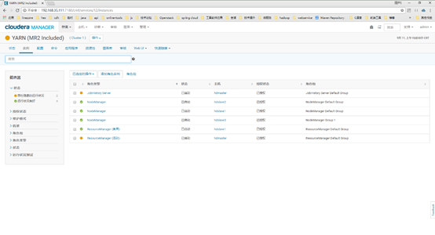

CDH高可用
环境说明
linux环境：centos7.4
CDH版本：CDH5.12.0
外置数据库（MariaDB）版本：5.5.56-MariaDB
HDFS HA
介绍

在Hadoop 2.0.0之前，NameNode是HDFS集群中的单点故障（SPOF）。每个群集都有一个NameNode，如果该机器或进程变得不可用，整个群集将无法使用，直到NameNode重新启动或在单独的计算机上启动。
这在两个主要方面影响了HDFS集群的总体可用性：
对于计划外事件（例如计算机崩溃），在操作员重新启动NameNode之前，群集将不可用。
计划维护事件（如NameNode计算机上的软件或硬件升级）将导致群集停机时间窗口。
HDFS高可用性功能通过提供在具有热备用的主动/被动配置中的同一群集中运行两个冗余NameNode的选项来解决上述问题。这样，在机器崩溃的情况下，可以快速故障转移到新的NameNode，或者为了计划维护，可以进行正常的管理员启动的故障转移。
在典型的HA群集中，两台独立的计算机配置为NameNode。在任何时间点，其中一个NameNode处于活动状态，另一个处于待机状态。 Active NameNode负责集群中的所有客户端操作，而Standby只是充当从属服务器，维持足够的状态以在必要时提供快速故障转移。
为了使备用节点保持其状态与活动节点同步，当前实现要求两个节点都可以访问共享存储设备上的目录（例如，来自NAS的NFS安装）。在将来的版本中可能会放宽此限制。
当Active节点执行任何名称空间修改时，它会将修改记录持久地记录到存储在共享目录中的编辑日志文件中。 Standby节点不断观察此目录以进行编辑，并在查看编辑时将其应用于自己的命名空间。如果发生故障转移，备用数据库将确保在将自身升级为活动状态之前已从共享存储中读取所有编辑内容。这可确保在发生故障转移之前完全同步命名空间状态。
为了提供快速故障转移，备用节点还必须具有关于群集中块的位置的最新信息。为了实现这一点，DataNode配置了两个NameNode的位置，并向两者发送块位置信息和心跳。
对于HA群集的正确操作而言，一次只有一个NameNode处于活动状态至关重要。否则，命名空间状态将在两者之间快速分歧，冒着数据丢失或其他不正确结果的风险。为了确保此属性并防止所谓的“裂脑情景”，管理员必须为共享存储配置至少一种防护方法。在故障转移期间，如果无法验证先前的活动节点是否已放弃其活动状态，则防护进程负责切断先前Active对共享编辑存储的访问。这可以防止它对命名空间进行任何进一步的编辑，从而允许新的Active安全地进行故障转移。
启用
进入HDFS服务页面，点击“操作”下拉菜单中才“启用 High Availability”按钮。

启用HA之后，集群中会有两个NameNode，需要给两个NameNode取一个代理的名称，默认为nameservice1。

选择需要安装NameNode和JournalNode的主机：

填写NameNode和JournalNode的数据目录，如果目录不存在则需要手动去创建，具体如下图。

点击“继续”

点击“完成”按钮，完成配置。
禁用
进入HDFS界面，选择下拉列表的“禁用 High Availability”按钮。

禁用HA之后，集群内只会有一个NameNode，则需要从高可用环境下的两个NameNode中选择一个NameNode，同时需要在一个节点安装SecondaryNameNode，如下图所示：

选择HDFS检查点目录，点击“继续”如下图

点击“完成”按钮，完成配置。

YARN HA
介绍

ResourceManager HA通过Active-standby资源管理器对实现。在启动时，每个ResourceManager都处于待机状态;进程已启动，但未加载状态。当其中一个ResourceManagers转换为活动状态时，ResourceManager从指定的状态存储加载内部状态并启动所有内部服务。转换为活动的激励来自管理员（通过CLI）或启用自动故障转移时的集成故障转移控制器。
运行两个ResourceManagers时，可能会出现一个双脑情况，资源管理器都认为它们处于活动状态。为避免这种情况，只有一个ResourceManager应该能够执行活动操作，而另一个ResourceManager应该被“隔离”。基于ZooKeeper的状态存储（ZKRMStateStore）只允许单个ResourceManager对存储状态进行更改，隐式屏蔽其他ResourceManager。这是通过ResourceManager声明对根znode的独占create-delete权限来完成的。根znode上的ACL是根据为存储配置的ACL自动创建的;在安全集群的情况下，建议为根主机设置ACL，以便两个ResourceManagers共享读写管理员访问权限，但具有独占的create-delete访问权限。防护是隐式的，不需要显式配置（如HDFS和MRv1中的防护一样）。
启用
进入YARN服务页面，点击“操作”下拉菜单中才“启用 High Availability”按钮。

选择需要安装ResourceManager的另外一个节点，点击“继续”

之后页面则进行启用HA的操作，操作完成之后，点击“完成”按钮，完成YARN的高可用配置。


YARN高可用启用之后，服务页面如下图所示

禁用
进入YARN界面，选择下拉列表的“禁用 High Availability”按钮。

禁用HA之后，集群内只会有一个ResourceManager，则需要从高可用环境下的两个已经装了ResourceManager主机中选择一个，选择好以后，选择“继续”

点击“完成”，完成配置


HBASE HA
介绍
HBase的大多数方面在标准配置中都是高度可用的。集群通常由一个Master和三个或更多RegionServers组成，数据存储在HDFS中。要确保每个组件都具有高可用性，请配置一个或多个备份主服务器。备份主服务器在活动主服务器之外的其他主机上运行。
启用
首先进入hbase服务界面，再进入“实例”界面。

点击“添加角色”，进入如下界面

选择Master下方的“选择主机”按钮，选择一台需要安装Master的机器，点击“确认”按钮

选择好Master主机之后，再点击“继续”按钮

添加完成之后，实例页面会多出一个Master的角色的实例，但是该实例是“已停止”状态，需要启动该服务。


点击“启动”，则进行Master服务的启动

启动完成之后，则关闭浮窗页面

完成服务添加之后，就会出现两个Master角色实例，一个是备份状态，一个是活动状态，如下图所示：

禁用
禁用Hbase高可用，只需要卸载掉Master角色实例，只剩一个Master角色实例即可，操作如下：
选择备份的Master角色实例，停止该角色实例

点击“停止”按钮

角色实例停止完成之后，点击“关闭”按钮

选中已经停止的Master角色实例，点击“删除”选项

浮窗页面，点击“删除”

完成HA禁用操作